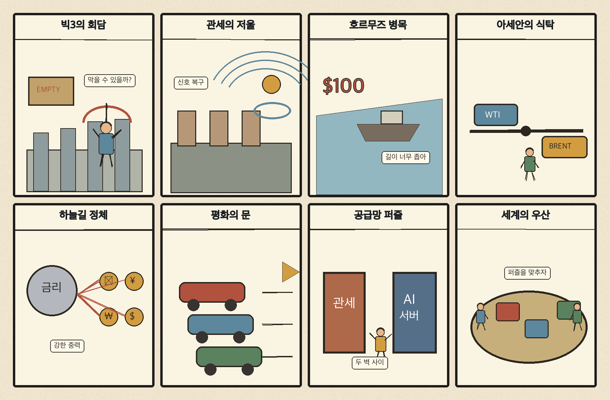
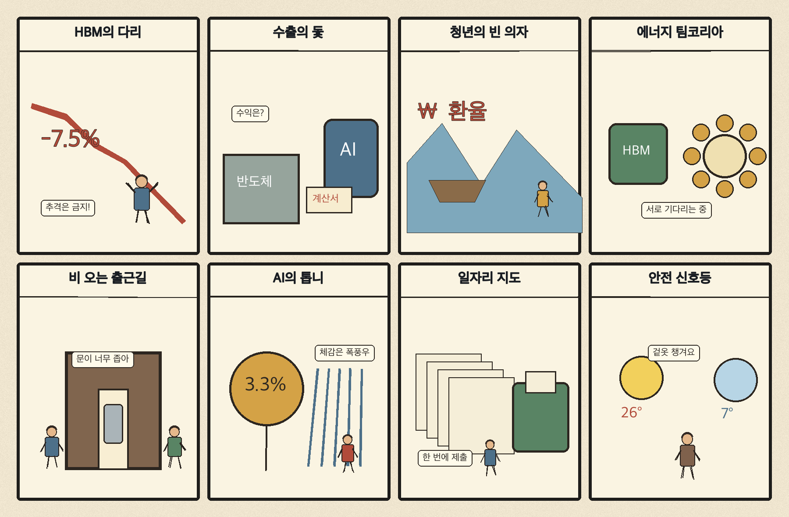

01
AMD · 566.79→534.06달러 · -5.77%
내용요약 시가 대비 -5.77%로 조사군 최하위 하락을 기록했습니다.
예상여파 AI 반도체 위험회피가 국내 반도체 대형주와 장비·소재 심리에 부담이 될 수 있습니다.
MORNING_BRIEFING_20261116
작성 시각: 2026-11-16 06:34 KST · 직전 미국 정규장과 2026-11-16 KST 당일 공개 기사 기준
11월 13일 뉴욕증시는 다우 +0.10%, S&P 500 -0.40%, 나스닥 -0.91%로 혼조 마감했습니다. 엔비디아 -4.16%, AMD -5.77%, 브로드컴 -2.67%로 AI 반도체가 약했고 메타·앱러빈·스포티파이는 상승해 기술주 내부 차별화가 컸습니다. 국내 시장은 13일 KOSPI -0.98%, KOSDAQ +0.45%로 엇갈려 다음 거래일에는 반도체 대형주의 낙폭과 외국인 수급 확인이 우선입니다.
| 지수 | 종가 | 등락률 | 한국 증시 시사점 |
|---|---|---|---|
| 다우존스 | 52,347.55 | +0.10% | 경기민감주 방어력은 남았지만 장중 변동성 확대 |
| S&P 500 | 7,561.67 | -0.40% | 성장주·반도체 투자심리에 부담 |
| 나스닥 종합 | 25,136.27 | -0.91% | 성장주·반도체 투자심리에 부담 |
미국 성장주 약세는 오늘 국내 반도체 시초가에 부담입니다.
엔비디아 -4.16%, AMD -5.77%로 공급망 전반의 변동성 확대가 예상됩니다.
13일 시가 대비로는 -2.97%여서 장중 매물 압력이 더 컸습니다.
장전 갭과 외국인 현·선물 수급을 확인한 뒤 대응합니다.
11월 15일 보고서는 휴장일이었고 수급·컨센서스·30건 이상 유사 조건 표본을 모두 확보하지 못해 공식 추천을 내지 않았습니다. 사후 종목을 추가하지 않습니다.
| 시장 | 종가 | 등락률 | 기준 |
|---|---|---|---|
| KOSPI | 5,290.53 | -0.98% | 11월 13일 · 시가 대비 -2.97% |
| KOSDAQ | 699.66 | +0.45% | 11월 13일 · 시가 대비 -0.89% |
| 다우존스 | 52,347.55 | +0.10% | 미국 11월 13일 정규장 |
| S&P 500 | 7,561.67 | -0.40% | 미국 11월 13일 정규장 |
| 나스닥 종합 | 25,136.27 | -0.91% | 미국 11월 13일 정규장 |
앱러빈 +3.42%, 메타 +2.31%, 스포티파이 +1.95%였습니다.
홈디포 +1.36%, 월마트 +1.04%로 지수 대비 견조했습니다.
AMD -5.77%, 엔비디아 -4.16%, ARM -3.03%로 낙폭이 컸습니다.
크라우드스트라이크 -4.05%, 로켓랩 -3.41%로 성장주 위험회피가 나타났습니다.
내용요약 시가 대비 -5.77%로 조사군 최하위 하락을 기록했습니다.
예상여파 AI 반도체 위험회피가 국내 반도체 대형주와 장비·소재 심리에 부담이 될 수 있습니다.
내용요약 시가 대비 -4.16%로 하락하며 기술주 약세를 주도했습니다.
예상여파 실적 발표를 앞둔 기대와 경계가 교차해 국내 HBM 공급망 변동성도 커질 수 있습니다.
내용요약 시가 대비 +3.42%로 조사군 최상위 상승을 기록했습니다.
예상여파 기술주 약세 속 광고기술주의 상대강세는 성장주 내부의 선택적 순환을 보여줍니다.
내용요약 시가 대비 +2.31%로 상승했습니다.
예상여파 대형 플랫폼 가운데 차별화된 흐름이 이어졌지만 AI 투자비용 논쟁은 계속될 수 있습니다.
내용요약 시가 대비 -4.05%로 하락했습니다.
예상여파 고평가 성장주와 보안 소프트웨어의 변동성 확대를 경계할 필요가 있습니다.
미국 AI 반도체 약세가 삼성전자·SK하이닉스 및 장비·소재주의 시초가에 부담을 줄 수 있습니다. 다만 미국 다우와 일부 플랫폼·소비주는 버텼으므로 장 초반 갭 하락 이후 외국인 현·선물 수급, KOSPI 5,250선 방어, 반도체 낙폭 축소 여부를 확인해야 합니다. 오늘은 방향을 예단하기보다 개장 후 가격과 수급의 일치 여부가 우선입니다.
오늘은 추천 없음 — 현금 관망
개장 전 시점에 종목별 당일 시가와 실시간 수급을 확인할 수 없고, 종합점수 75점·상승확률 60%·예상 손익비 1.5와 30건 이상 유사 조건 표본을 모두 검증한 후보가 없어 공식 추천을 내지 않습니다.
관심 연결종목 HBM·SMR 전력·피지컬 AI는 관찰 대상일 뿐 매수 추천이 아닙니다. 장전 예상과 다른 갭이 발생할 수 있으므로 추격매수를 금지합니다.
실적 발표를 앞둔 기대와 변동성이 국내 반도체에 미치는 영향을 봅니다.
다음 거래일 KOSPI 대형주 매도 압력이 완화되는지 확인합니다.
13일 장중 저점 부근에서 매수세가 유입되는지 살핍니다.
관세·농산물 논의가 공급망 불확실성을 낮추는지 점검합니다.
핵심 요약: AI 산업의 초점이 반도체 공급에서 모델·서비스·전력·산업용 로봇을 잇는 생태계로 넓어지고 있습니다. 장기 성장 기대와 별개로 2028년 전후 설비투자 조정 가능성이 제기돼 주문과 수익성 검증이 더 중요합니다.
내용요약 미국 AI 투자가 2028년 전후 조정될 수 있으며 반도체 호황 의존도가 높은 한국 경제가 시험대에 설 수 있다는 분석입니다.
예상여파 AI 설비투자 둔화 가능성은 HBM·장비주의 장기 전망보다 단기 주문과 재고 지표를 더 엄격히 확인하게 만들 수 있습니다.
내용요약 최태원 회장이 AI 반도체와 서비스가 서로 수요를 만드는 선순환 구조를 구축하자고 제안했습니다.
예상여파 국내 AI 산업의 경쟁 기준이 칩 공급에서 모델·서비스·데이터센터를 잇는 생태계 실행력으로 넓어질 수 있습니다.
내용요약 구글이 코딩과 문서 분석에 활용하는 새 제미나이 모델을 공개했다는 보도입니다.
예상여파 생성형 AI 경쟁이 업무 자동화와 개발도구 시장으로 깊어지면서 기업의 모델 선택과 비용 최적화 경쟁이 커질 수 있습니다.
내용요약 오클로와 센트러스가 메타 데이터센터용 소형모듈원자로 5기에 핵연료를 공급하는 계약을 확정했다는 소식입니다.
예상여파 AI 데이터센터 전력 확보가 원전 연료와 SMR 공급망의 실제 계약으로 이어지며 관련 인프라 투자가 확대될 수 있습니다.
내용요약 대구 산업전시회에 13개국 274개 기업이 모여 공장용 AI 로봇 기술을 선보인다는 보도입니다.
예상여파 피지컬 AI의 상용화 경쟁이 제조 현장의 생산성·안전·인력 부족 해소를 중심으로 빨라질 수 있습니다.
핵심 요약: 미·중·러 정상외교와 관세 협상 재개가 국제질서와 교역의 핵심 변수로 떠올랐습니다. 호르무즈 긴장, 아세안 현안, 미국 항공 대란은 에너지·물류의 단기 불확실성을 높이고 있습니다.
내용요약 미국·중국·러시아 정상회담 예고가 제2차 세계대전 후 질서 재편에 비견될 수 있다는 외교 분석입니다.
예상여파 강대국 간 담판이 우크라이나·통상·한반도 안보 의제를 거래 대상으로 만들 수 있어 한국의 외교 선택지가 중요해질 수 있습니다.
내용요약 미국과 중국이 600억달러 규모 관세 인하 협상을 재가동했다는 보도입니다.
예상여파 합의 진전은 교역과 공급망 불확실성을 낮출 수 있지만 세부 품목과 이행 조건이 확인되기 전 낙관은 이릅니다.
내용요약 국제유가 하락에도 호르무즈 해협을 둘러싼 긴장이 다시 높아지고 있다는 보도입니다.
예상여파 해상 운송 차질 위험이 커지면 유가·운임·보험료가 반등해 수입국 물가에 부담을 줄 수 있습니다.
내용요약 아세안 정상회의가 마닐라에서 개막해 미얀마 관계 회복 등을 조건부로 검토한다는 소식입니다.
예상여파 동남아 외교 균형과 남중국해·공급망 협력이 역내 투자 환경에 영향을 줄 수 있습니다.
내용요약 미국 항공 운항 차질이 사흘째 이어지며 누적 결항이 1만7000편을 넘었다는 보도입니다.
예상여파 여객·물류 지연이 장기화되면 항공사 비용과 글로벌 공급 일정에 단기 충격이 커질 수 있습니다.

핵심 요약: 한국은 HBM 경쟁력과 수출 외형을 AI 서비스·에너지 인프라·양질의 일자리로 연결해야 하는 과제를 안고 있습니다. 오늘은 동해안 비와 산지 눈 가능성까지 출근길 안전 변수로 확인해야 합니다.
내용요약 HBM 경쟁력을 가진 한국이 AI 모델·서비스 주권까지 확보해야 한다는 산업 분석입니다.
예상여파 반도체 수출 호조를 국내 AI 서비스와 데이터센터 생태계로 연결하는 정책·투자 실행력이 핵심 과제가 될 수 있습니다.
내용요약 한국 수출이 연간 1조달러에 근접하며 반도체 중심 산업 구조의 성과가 부각됐다는 보도입니다.
예상여파 수출 외형 확대는 성장에 긍정적이지만 품목·시장 편중과 통상 압력에 대한 완충 장치가 필요합니다.
내용요약 경제활동을 쉬는 미혼 청년의 결혼 의향과 미래 인식에 관한 조사 결과가 소개됐습니다.
예상여파 고용 불안과 소득 전망이 가족 형성 지연으로 이어질 수 있어 양질의 초기 일자리와 주거 지원의 중요성이 커집니다.
내용요약 태양광·에너지저장장치로 개발도상국의 전력·물 문제를 해결하는 해외 진출 사업이 시작된다는 소식입니다.
예상여파 국내 에너지 기업의 수출 기회가 늘 수 있으나 현지 금융·운영·정비 역량이 사업 지속성을 좌우할 수 있습니다.
내용요약 동해안과 경상권에 비가 내리고 강원 산지에는 눈 가능성이 있으며 남부 아침 기온이 낮아진다는 예보입니다.
예상여파 출근길 교통 안전과 농작물 냉해, 산지 도로 결빙에 유의해야 합니다.
